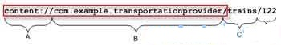

Android Content Provider详解（三）
query()方法，返回值是Cursor实例，用于迭代请求的数据。Cursor是一个接口。android为该接口提供了一些只读的（和JDBC的ResultSet不一样，后者还提供可写入的可选特性）Cursor实现。比如SQLiteCursor，可迭代SQLite数据库中的数据。可以通过SQLiteDatabase类的query()方法获取到该Cursor实例。还有其他的Cursor实现，比如 MatrixCursor，用于数据不是存储在数据库的情况下。
因为Contentprovider可能被多个ContentResolver对象在不同的进程和线程中调用，因此实现Contentprovider必须考虑线程安全问题。
作为良好的习惯，在实现编辑数据的代码中，要调用ContentResolver.notifyChange()方法，通知那些监听数据变化的监听器。
在实现子类的时候，还有一些步骤可以简化Contentprovider客户端的使用：
定义public static final Uri常量，名称为CONTENT_URI：
public static final UriCONTENT_URI =Uri.parse("content://com.example.codelab.transportationprovider");
如果有多个表，它们也是使用相同的CONTENT_URI，只是它们的路径部分不同。

也就是说红色框部分是一致的。
定义返回的列名，public static final，列名的值，比如使用SQLite数据库作为存储，对应表的列名。
在文档中要写出各个列的数据类型，便于使用者读取。
如果需要处理新的MIME数据类型，比如通过Intent的方式，并且带data的mimeType（参见总结一下Intent概念），那么需要在ContentProvider.getType()方法中进行处理，参见编写完整的Contentprovider示例编写一个getType方法部分。
如果处理数据库表中超大的数据，比如很大的位图文件，一般存在文件系统中，可以参照在contentprovider中使用大型二进制文件，这样第三方的contentprovider使用者，可以访问不属于它权限的文件，通过contentprovider做代理。
声明ContentProvider
创建ContentProvider后，需要在manifest文件中声明，android系统才能知道它，当其他应用需要调用该ContentProvider时才能创建或者调用它。
语法类似：
<provider android:name="com.easymorse.cp.MyContentProviderandroid:authorities="com.easymorse.cp.mycp">
</provider>
android:name要写ContentProvider继承类的全名。
android:authorities要写和CONTENT_URI常量的B部分。